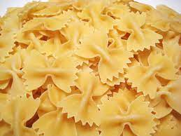

Tuna Pasta

Description
A childhood classic, this was a frequently requested dish. Fairly quick and easy to make.
Ingredients
- 1 lb. pasta (we like cavatappi, farfalle, or penne, but any pasta will do)
- 3-4 cloves minced garlic (use more if you like!)
- 1 Tb. olive oil
- Large can of tuna, drained
- Juice of 2-3 lemons (you can add lemon zest if you don’t have much juice - the lemon is important)
- 4 Tb. butter, cut into pats
- Grated parmesan (to taste - I usually use about ¾ - 1 cup, I think)
Steps
- Cook the pasta according to the package instructions.
- Meanwhile, heat the olive oil in a small pan and saute the garlic for about 1 minute. You want to cook the
garlic a bit, but not brown it. (I don’t even cook it all the way because I like the flavor and raw garlic
is so good for you.) Turn off the heat and dump in the tuna. You’re not cooking the tuna - just heating it
up a tiny bit.
- When the pasta is cooked and drained, add the lemon juice and butter and stir well. Then add the tuna and
garlic and stir. Finally, add the parmesan cheese, season to taste with salt and pepper, and stir.
- Tips: Don’t overcook the pasta if you can help it - there is so much stirring at the end that you will end
up with a mushy dish (or, um, so I’ve heard). You can use shredded parmesan if that’s all you can get - the
cheese will be more stringy, but still delicious. You can add more lemon or cheese or salt at the end if you
like. The salt really helps open up all the flavors. I think the original recipe may have included some
capers, sauteed with the garlic, which would probably be lovely. Leftovers heat up pretty well.